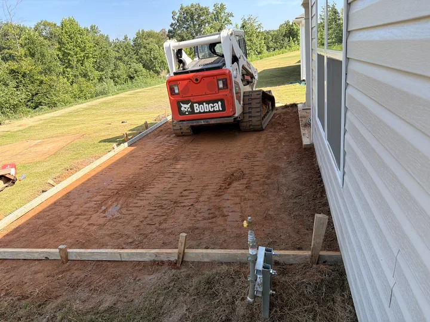

EBC
Concrete and site work from preparation to finish.
Real work. Clear process.
Each image is organized by the activity that is actually visible—preparation, demolition, excavation, grading, concrete placement or finish—so you can see how the work moves forward.
Photos and videos shown here come from multiple completed and active EBC projects.
Visualize your project before work begins.
With photos, approximate measurements and visual references, we can discuss the shape, size and intended use of your space more clearly before moving soil or placing concrete.
Visual references are conceptual. They do not replace engineering plans, structural calculations, permits or construction documents when those are required.

Site referenceFrom the ground up.
Use the filters or follow the phases in order to see the work as it develops.
Preparation
Cleaning, layout, forms, stone and compaction according to site conditions.
Demolition
Controlled removal of existing concrete and debris before the new work begins.
Excavation
Cuts, roots and soil removal with equipment selected for the site.
Grading
Ground shaping for access, drainage, stability and final preparation.
Concrete
Placement and distribution of fresh concrete inside the prepared work area.
Finish
Edges, joints, power troweling, texture, cleanup and the completed result.
Tell us what you need built.
Send the address, photos and approximate measurements. EBC will review the site information and help define the next step.